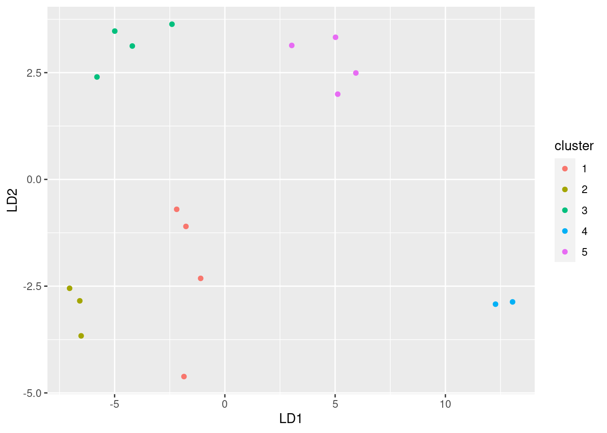

Chapter 6 Rainfall in Davis, California
One way to assess climate change is to look at weather records over a number of years and to identify any changes.
Annual rainfall data for the Davis, California is in . (Right-click on the URL and select Copy Link Address, then paste into your R Notebook.) The rainfall is measured in inches.
- Read in and display (some of) the data. Briefly justify why you coded it as you did.
Solution
Look at the data file, and see that the values are separated by a
single space, so will do it. (This is the brief justification.) You need to have some words in this part explaining your choice of read_delim (or read_table: see below).
Read straight from the URL rather than copying and pasting the data or doing anything like that: Reading from the URL is reproducible in that somebody else doing what you did will get exactly what results you did. Copying and pasting data is not in general reproducible because somebody else might do it differently from you, such as missing a line of data. Copying and pasting a URL, especially by right-clicking and Copy Link Address, has much less to go wrong. Physically selecting the URL text by selecting all the letters in the URL can go wrong, especially if the printed URL goes over two lines on the page.
##
## ── Column specification ──────────────────────────────────────────────────────────────────────────────────────────────────────────────────────────────────────────────────────────────────────
## cols(
## Year = col_double(),
## Rainfall = col_double()
## )Note for later that the and the have Capital Letters. You can call the data frame whatever you like, but I think something descriptive is better than eg. .
Extra 1: read_delim works because there is exactly one space between the year and the
rainfall amount. But the year is always four digits, so the columns
line up, and there is a space all the way down between the year and
the rainfall. That is to say, another possibility for your “brief justification” is that the columns are lined up all the way down.
That means that this will also work:
##
## ── Column specification ──────────────────────────────────────────────────────────────────────────────────────────────────────────────────────────────────────────────────────────────────────
## cols(
## Year = col_double(),
## Rainfall = col_double()
## )This is therefore also good.
It also looks as if it could be tab-separated values, since the rainfall column always starts in the same place, but if you try it, you’ll find that it doesn’t work:
##
## ── Column specification ──────────────────────────────────────────────────────────────────────────────────────────────────────────────────────────────────────────────────────────────────────
## cols(
## `Year Rainfall` = col_character()
## )This looks as if it worked, but it didn’t, because there is only column, of years and rainfalls smooshed together as text, and if you try to do anything else with them later it won’t work. It is actually possible to disentangle data like this and then work with it (we will see how later in the course), but the best way to do it is to make it easiest for yourself and anyone reading your code, and read the data file in a way that is appropriate for the layout you have in the file.
Hence those values that might have been tabs actually were not. There’s no way to be sure about this; you have to try something and see what works. An indication, though: if you have more than one space, and the things in the later columns are left-justified, that could be tab-separated; if the things in the later columns are right-justified, so that they finish in the same place but don’t start in the same place, that is probably aligned columns.
Extra 2: read.table with a dot will work, but it is in this course wrong. As I stated in the course outline, I expect you to do things as they are done in this course. Strictly speaking, if you use read.table, which you did not learn from me, and you say nothing about where you got it from, you are guilty of plagiarism, which is an academic offence. I will probably not be that strict, but you should certainly expect to lose credit for doing things differently from how they are done in this course. The idea is that you need to demonstrate that you have learned something here.
\(\blacksquare\)
- Make a suitable plot of the rainfall values and years. Explain briefly why you drew the plot you did.
Solution
This is two quantitative variables, so a scatterplot makes sense. (That’s the brief explanation.) To decide which variable goes on which axis, think of rainfall as a response to the explanatory variable year, or note that time goes by tradition on the horizontal axis:

This is a time trend, so it would also be reasonable to join the points with lines:

and because any trend looks irregular, you could also justify putting a smooth trend through the points:
## `geom_smooth()` using method = 'loess' and formula 'y ~ x'
This one is rather interesting (as an aside): there is a more noticeable upward trend at the end, after about 1985. If you study environmental science, you may have seen that a lot of time plots of climate data show a bigger change after about 1990, and this is one of those.
If you treat the year as categorical, and try to draw a boxplot, it won’t work out so well:
## Warning: Continuous x aesthetic -- did you forget aes(group=...)?
This is actually a boxplot of rainfall in all the years together; it ignored year because it couldn’t figure out what you wanted to do with it. The warning message is indicating that you might have forgotten something that defines groups; the x is quantitative here. So you have to clarify what you meant. For example, you might have meant to treat the years as categorical, which you could do like this:

Aside from the fact that you have too many years to see them all, you only have one observation per year (that year’s annual rainfall), so you don’t get an actual box. To get boxes, you need to organize groups where you have multiple observations, for example decades:
rain %>%
mutate(decade_number = Year %/% 10) %>%
mutate(decade = str_c(decade_number, "0s")) %>%
ggplot(aes(x = decade, y = Rainfall)) + geom_boxplot()
You see that there seems to have been an upward jump in rainfall in the 1990s (the last decade in the data).
About the code: `%/%’ does “integer division” (throws away the fractional part if there is one), so the calculation turns eg. 1954 into 195. I wanted to have the graph display something you could understand, so I constructed some text out of the decade number by gluing a 0 and a letter s onto the end.
Another kind of situation where this approach does work is if you have something like monthly rainfall over a number of years, and then you have multiple values for January over all the years that you have data for.
\(\blacksquare\)
- Add a regression line to your plot. Is there any convincing indication of a trend, upward or downward, in annual rainfall for Davis, California? Discuss briefly.
Solution
Thus:
## `geom_smooth()` using formula 'y ~ x'
The regression line goes uphill, but this is not convincing evidence of an overall upward trend for several reasons (pick one):
Further evidence comes from a regression (which we haven’t looked at yet):
##
## Call:
## lm(formula = Rainfall ~ Year, data = rain)
##
## Residuals:
## Min 1Q Median 3Q Max
## -12.670 -5.252 -1.905 7.088 17.804
##
## Coefficients:
## Estimate Std. Error t value Pr(>|t|)
## (Intercept) -208.57325 158.42281 -1.317 0.195
## Year 0.11513 0.08025 1.435 0.158
##
## Residual standard error: 7.463 on 45 degrees of freedom
## Multiple R-squared: 0.04373, Adjusted R-squared: 0.02248
## F-statistic: 2.058 on 1 and 45 DF, p-value: 0.1583The slope is indeed positive, but it is not significantly different from zero. Also, the R-squared is very small, 4.4%. Thus the apparent upward trend is no more than chance.
Extra: looking at the plot from earlier with the smooth trend suggests that there may not have been any real increase since 1950, but if you look only since about 1985 it may be different. There is a statistical question mark over that, though, because we started looking at 1985 only because there seemed to be an upward trend starting from about there.
\(\blacksquare\)